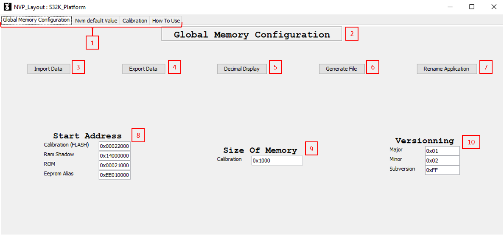
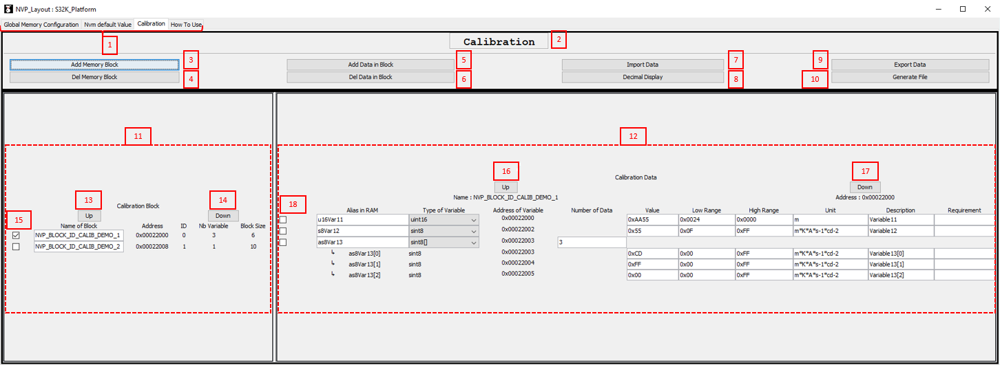
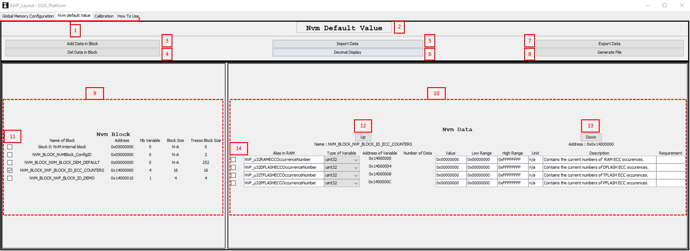

This document defines how to use the application with global view.
If you need more information please refer to advanced section.
0 - Prerequisites
Make sure that :
File in S:\Components\Application\NVP\Config\NVP_Layout are up to date.
Read-only are not present on the sandbox. Use S:\Scripts\VirtualDrive\core\RemoveReadOnly.bat if not.
For NVM part, don't forget to configure the different block in TRESOS first.
1 - GLOBAL CONFIGURATION
The global configuration tab is use to configure the different block in memory.
This view is based on the GlobalConfiguration.xml file in S:\Components\Application\NVP\Config\NVP_Layout folder.
1.1 - Overview

Figure 1 : Overview of the Global Memory Configuration panel
Panel controller to switch between different section.
Title of the active tab.
Use to import from the database present in xml file.
Use to save the data from this panel to the local xml file.
Change the base of the number from decimal to hexadecimal and vice versa.
Launch the generation of compiled file.
Set a pop-up to rename the project in title.
Set the start address of the different memory section.
Set the size of the different memory section.
Set the version of the calibration part.
1.2 - Functionality
This tab is for present the memory mapping and modify it if wanted. There is no hidden functionality.
1.3 - Generate file
Impacted file :
GlobalConfiguration.xml
Nvp_MemoryMapping.h
CalibrationFlash.S00
This tab is used to update the GlobalConfiguration.xml with the import and export action.
(For more precision according the structure of this file please refer to the advanced tab)
It is use to generate the compiled file Nvp_MemoryMapping.h, and the flashed file CalibrationFlash.S00.
The first file is used to setup the start memory section in software.
The second is for write, in the end of the calibration memory section, the version of the calibration.
Those file are generate by python script present in S:\Components\Application\NVP\Config\NVP_Layout\Scripts, named as generate_NameOfFile+extension.py.
1.4 - Impact on other tab
The data Calibration (FLASH) and Ram Shadow are export to respectively the calibration tab and the Nvm Default tab.
In order to automatically recompute the different address of the data.
2 - CALIBRATION
The Calibration tab is use to configure all parameter for the calibration section memory, except the start address which is configurable in Global Memory Configuration in the 8 section.
1.1 - Overview

Figure 2 : Overview of the Calibration Memory section panel
Panel controller to switch between different section.
Title of the active tab.
Add a block instance to the memory calibration section.
Delete the selected block from the calibration section.
Add a data in the selected block.
Delete the selected data in the selected block.
Use to import from the database present in xml file..
Change the base of the number from decimal to hexadecimal and vice versa.
Use to save the data from this panel to the local xml file.
Launch the generation of compiled file.
Calibration block section define the different block present in calibration section.
Calibration data section define the different data present in a calibration block.
This button is used to modify the order of the selected block with UP action.
This button is used to modify the order of the selected block with DOWN action.
This check box is used to select and inform which block is currently selected.
You can select the block with a click on the name too.
This button is used to modify the order of the selected variable with UP action.
This button is used to modify the order of the selected variable with DOWN action.
This check box is used to select and inform which variable is currently selected.
1.2 - Functionality
The calibration tab can configure the calibration memory section with simple action. Add or remove a block is automatically, and the address, id, size, ... are automatically recompute.
Some check are also implemented or will be implemented, like : high and low range check, empty block, memory misalignment, automatic prefix according the type of variable.
1.3 - Generate file
Impacted file :
Calibration.xml
Nvp_Generated_Calibration.h
Nvp_Generated_Calibration.c
CalibrationFlash.S00
This tab is used to update the Calibration.xml with the import and export action.
(For more precision according the structure of this file please refer to the advanced tab)
It is use to generate the compiled file Nvp_Generated_Calibration.h and Nvp_Generated_Calibration.c, and the flashed file CalibrationFlash.S00.
The first two file are used to setup the the calibration memory in software. They define the definition of a block and instantiate each variable to is address.
The last file is for setup the calibration in memory, in other word it force the write of one data in a define address place in memory.
Those file are generate by python script present in S:\Components\Application\NVP\Config\NVP_Layout\Scripts, named as generate_NameOfFile+extension.py
1.4 - Impact on other tab
NO IMPACT with other view
3 - NVM DEFAULT
The Nvm Default tab is used to set-up the default value of the variable NVM memory section. It take as input of this memory mapping the TRESOS output and the previous mapping of the NVP.
Before use this tab you need to correctly generate the file in TRESOS part.
1.1 - Overview

Figure 3 : Overview of the NVM Default Memory section panel
Panel controller to switch between different section.
Title of the active tab.
Add a data in the selected block.
Delete the selected data in the selected block.
Use to import from the database present in xml file and the TRESOS generated file.
Change the base of the number from decimal to hexadecimal and vice versa.
Use to save the data from this panel to the local xml file.
Launch the generation of compiled file.
Calibration block section define the different block present in calibration section.
Calibration data section define the different data present in a calibration block.
This check box is used to select and inform which block is currently selected.
You can select the block with a click on the name too.
This button is used to modify the order of the selected variable with UP action.
This button is used to modify the order of the selected variable with DOWN action.
This check box is used to select and inform which variable is currently selected.
1.2 - Functionality
When the application is open, an import is launch. The import consist in make 2 temporary memory definition, one from TRESOS and the other from the previous database.
A merge is automatically launch between those two different definition. The merge is almost automatic only the conflict were pop-up, and a manual action is needed.
Each import launch a merge, if there is nothing to manually merge the application is directly available.
The file from TRESOS take into account form the application are :
After the import you are able to configure the default data from the NVM part.
Add or remove a block is made by TRESOS so you are not allowed to do this is the application, this part is used to define the variable inside the different block.
Some check are also implemented or will be implemented, like : high and low range check, memory misalignment, automatic prefix according the type of variable, block size align with TRESOS defined size.
Address, id, size, ... are also automatically recompute.
1.3 - Generate file
Impacted file :
NvmDefault.xml
Nvp_alias.h
Nvp_Generated_NvmDefault.h
Nvp_Generated_NvmDefault.c
NvmDefaultValue.S00
This tab is used to update the NvmDefault.xml with the import and export action.
(For more precision according the structure of this file please refer to the advanced tab)
It is use to generate the compiled file Nvp_alias.h, Nvp_Generated_NvmDefault.h and Nvp_Generated_NvmDefault.c, and the flashed file NvmDefaultValue.S00.
The first three file are used to setup the the Nvm memory in software. They define the definition of a block and instantiate each variable to is address.
Furthermore they make the link between the block from TRESOS and the address of the default value for each block.
The last file is for setup the Nvm default value in memory, in other word it force the write of one data in a define address place in memory. This value is used as default by the software in case of problem in memory.
Those file are generate by python script present in S:\Components\Application\NVP\Config\NVP_Layout\Scripts, named as generate_NameOfFile+extension.py
1.4 - Impact on other tab
NO IMPACT with other view
4 - TIPS
Some tips and tricks to use the application in a good way :
The generation is deactivate if modification are made in the current page. Try to Export your modification before generate the compiled file.
The import delete all current value never export. So be sure that all wanted data are well export, and the TRESOS size are well set and generate.
If you need a lot of variable in a block please be gentle with the Front end, and don't Spam click. the limit is 1000 block of 1000 variable of 1000 data (if the variable is an array).